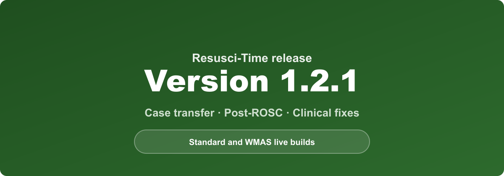
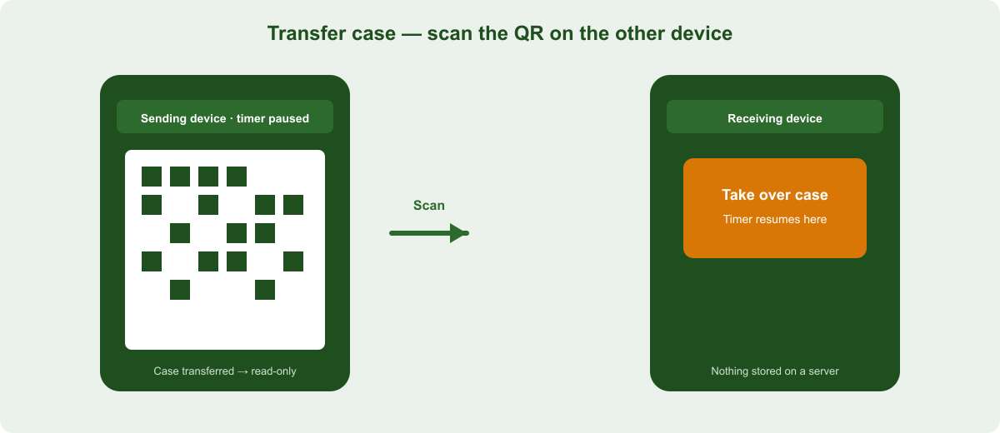
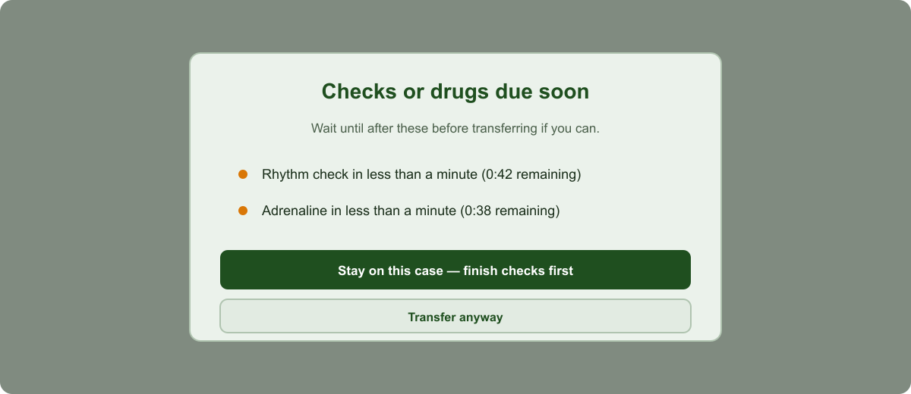
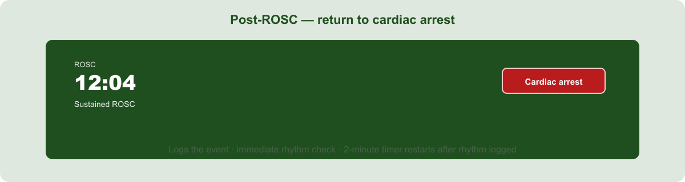

Release update — case transfer and post-ROSC improvements (version 1.2.1)
Versions 1.2.0 and 1.2.1 are rolling out on the Standard and WMAS live builds of Resusci-Time. Together they add case transfer between devices, safer handoff when checks are due, a clearer re-arrest path during post-ROSC care, and several clinical fixes around monitoring and termination.

Transfer case to another device (1.2.0)
When crew members need to hand the running case to a second phone or tablet — for example when swapping roles or moving to the ambulance — use Transfer case in the header during active resuscitation.

- Transfer case pauses the timer on this device and shows a QR code.
- The other device scans the code and is prompted Take over case (with a warning if a case is already in progress).
- When the receiving device has the case, tap Case transferred here — this device becomes read-only and the log closes.
- Tap Resume case if the transfer does not complete — the timer resumes on this device.
Case data is encoded in the QR only — nothing is stored on a server. Very long cases may exceed QR capacity; the app warns you to continue on this device instead.
The Case transferred banner clears when you start a new case or return to the start screen. Start new case on this device on the banner clears read-only state locally.
Checks due before you transfer (1.2.1)
If you tap Transfer case when a rhythm check or repeat adrenaline is due within a minute, a warning appears first:

- Lists what is imminent (for example rhythm check or adrenaline due now, or in less than a minute).
- Stay on this case — finish checks first — closes the warning so you can complete the step.
- Transfer anyway — continues to the QR handoff if you still need to transfer.
This reduces the chance of handing over mid-check without the crew noticing.
Post-ROSC — return to cardiac arrest (1.2.1)
During post-ROSC care the timer bar shows a red Cardiac arrest button (mirroring the green ROSC button used during arrest).

When the patient returns to cardiac arrest:
- Tap Cardiac arrest — the event is logged, and the app returns to arrest mode.
- An immediate rhythm check opens — select the current monitored rhythm (or ROSC if output returns).
- After the rhythm is logged, the 2-minute rhythm check timer restarts from that point.
You no longer need to wait for a scheduled rhythm check or rely on an indirect route back to resuscitation mode.
Sustained ROSC — alert and termination (fixes in 1.2.1)
When post-ROSC care reaches more than 10 minutes with output:
- The event is recorded in the log and an amber alert appears (acknowledge to dismiss).
- The alert notes that senior clinical discussion would be required should the patient return to cardiac arrest before any cessation of resuscitation.
- If the patient re-arrests and you open termination of resuscitation (TOR), a senior clinical discussion step appears first — the same pattern as prolonged VF/pVT on the WMAS build (see below).
The sustained ROSC clock and log entry now run reliably throughout post-ROSC care.
Other fixes (1.2.1)
Post-ROSC SBP and pulse reminders
- Button labels, colours, and logging for adequate vs inadequate SBP and pulse were corrected (they had been reversed).
- The pulse reminder waits until the SBP step is completed.
Early transfer reminder
- The “consider early transfer” prompt no longer appears after ROSC and re-arrest (it would not be appropriate in that context).
Copy
- User-facing text uses plain words (for example “60 bpm and above”) instead of
</>symbols.
WMAS build — prolonged VF at TOR (unchanged, for context)
The WMAS build still includes CODE SHOCK after the first shock and the prolonged VF TOR gate if Prolonged VF was logged during the case. Those features are not on the Standard build.
Sustained ROSC at TOR (above) applies on all builds once sustained ROSC has been achieved in the case.
See also: CODE SHOCK reminder for WMAS crews.
Training tip
Custom trust preview URLs remain available for walk-throughs with DEMO icons and optional preview speed (1×–10×). Live field builds always run at real time and do not show the preview startup warning.
Practice Transfer case and the Cardiac arrest button on a training case before relying on them on a real job.
Feedback
If any wording, timing, or placement should better match clinical practice, pass feedback to your clinical lead or the project maintainer.